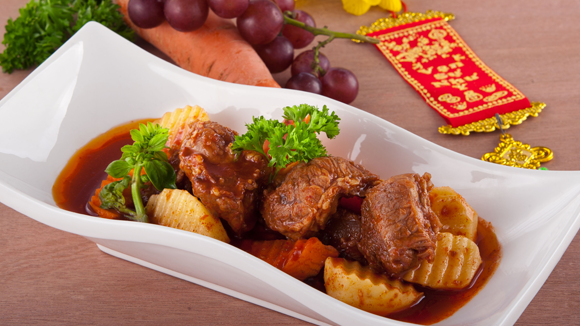

Bò nấu nho

- Khẩu phần 6
- Chuẩn bị phút
- Thực hiện 120 phút
Nguyên liệu
- 1.2 kg nạm bò
- 200 gr khoai tây
- 1 củ hành tây
- 1 củ cà rốt
- 50g nước ép nho
- 1 hủ nhỏ cà Paste
- Rượu vang đỏ Đà Lạt
- Súp nền thịt bò
- 3g tiêu
- Muối: tuỳ theo khẩu vị
- Hạt nêm từ Thịt thăn Xương Ống và Tủy bổ
sung Vitamin A
- 50g đường
- 200ml dầu ăn
- 100g bột mì
- 1 củ gừng
- 50g rau quế
Hướng dẫn thực hiện
- Thịt bò luộc sơ với gừng đập dập, dầu ăn. Đem xả nước và cắt miếng
khoảng 3 cm
- Ướp thịt bò (1.2 kg): ½ muỗng canh muối + 20gr đường + 30gr ép nho + 1
hộp cà paste trộn đều
- Phi thơm củ hành, cho hành băm, tỏi băm vào phi thơm tiếp, sau đó cho bò
vào xào cho săn thịt lại, rồi đổ vào nồi lớn, cho nước đã đánh tan súp nề
thịt bò vào nấu
- Tiếp theo cho lá nguyệt quế vào, nấu khoảng 1h30 phút, bò gần mềm cho
nho đã lột vỏ, nước cốt nho, rượu vang Đà lạt hòa tan với nước và cho vào
nồi, sau đó nếm nếm lại cho vừa ăn.
- Trang trí vào thố giữ nóng.